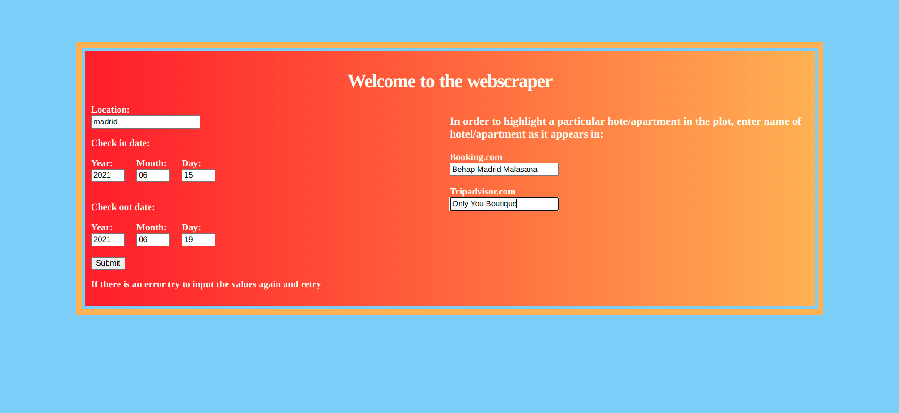
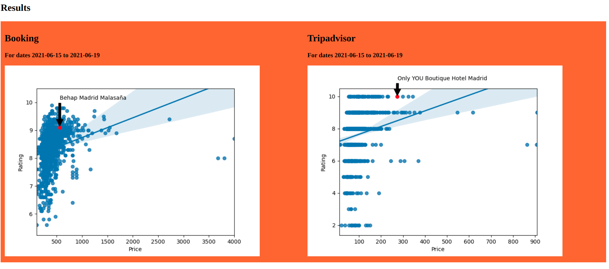
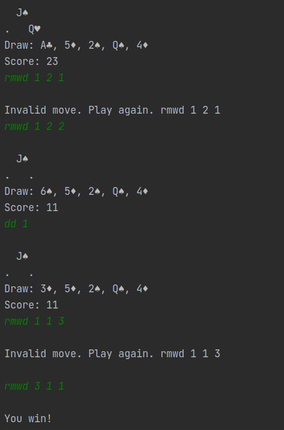

Rentmate
Working on startup Rentmate, have currently designed backend hapi.js framework. Planning to develop the frontend.Unir Anomaly Detection System
Developed an anomaly detection system that periodically looks at logs to determine if there is any unexpected behaviour in the
incoming http requests and responses.
If any unexpected behaviour is found, the bot sends out a message with detailed information regarding the detected anomaly.
The bot was able to detect most issues before they were detected by a developer or reported by a client. One time, a site was linked as xxx.htm however the correct site was xxx.html,
the bot was able to immediately detect around 200 404 responses and the issue was fixed promptly. Without the bot, the issue would have persisted much longer and would have affected many more users. Overall, the bot is very effective at quickly reporting problems and minimizing the time to the find the source of the problem.
The image below shows the sample message when an anomaly is detected. In the first message the ip 10.10.10.10 has made 23 requests for the request apilms.unir.net/xxx
with a unique ip count of 1 meaning that 10.10.10.10 is the only ip that has made this request with a response 500 in the last 5 minutes.
The next message with the site masterclass.unir.net has a response 401 with 16 unique users making that request in the past 5 minutes.
The next message with the site masterclass.unir.net has a response 401 with 16 unique users making that request in the past 5 minutes.
The software compares the data at a given time interval to the data of a given time interval 7 days ago, 14 days ago and 21 days ago, and uses the rolling mean to determine if it is an anomaly.
A sudden spike in responses that exceeds the upper bound of the rolling mean suggests there is an anomaly and reports it via the bot.

This project was written in python and relies heavily on Pandas to carry out periodic anomaly detection. The data from the logs is gathered using the Elasticsearch API, in order minimize the data being requested, the data is cached every time the program runs so it can be reused later for anomaly detection.
Web Scraper
Developed a web scraper that scrapes Tripadvisor and Booking.com for the hotel name, price and rating of hotels in a given area. The project runs on a Flask Framework, the screenshots below demonstrate the frontend.
The backend uses Selenium to scrape the data and Pandas to generate the graphs. The software was used by Fuengirola Beach Hotel to asses their market position. Apart from being useful to hotel managers it is also very useful as a tool to find hotels at a good price range with a good rating. At one point I gave the software a list of cities and scraped data for days straight until I had millions of entries and was able to analyze that data using Pandas, there were lots of interesting observations to be made like what the average rating per city was, the average price per city, the cheapest hotel in any given city etc.
The screenshot below shows the home screen, it accepts a city name, check in and check out dates.
Additionally, in order to highlight a specific hotel in the graphs that are generated, the user should pass the name of the hotel as it appears in Booking.com and as it appears in Tripadvisor.

The screenshot below shows the graphs generated after scraping the data. The blue dots represent the hotels, the two hotels highlighted in the graphs are those requested by the user, the y axis is the rating and the x axis is the price.

Wiimote Robot Arm
Programmed FPGA to map inputs to the Servo Motors in robotic arm using Simulink, wrote C++ code to move the Servo Motors and connected to the Wiimote through Bluetooth.
For a video demo click here.
The image below shows the robotic arm and the Wiimote used to control it.
Pyramid Solitaire
Programmed Pyramid Solitaire game using object oriented programming and the model, controller and view design pattern. Focused on abstraction, avoiding code duplication, handling edge cases and adhering to the design pattern.
The screenshot below shows an example walk through of the game. The game also supports multiple functionalities like different pyramid size and game modes.
